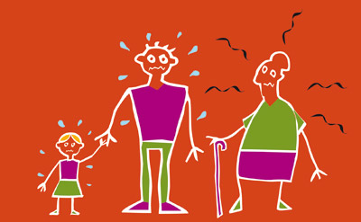

Les risques sur votre santé peuvent survenir dès les premiers jours de chaleur.
Des gestes simples permettent d’éviter les accidents. Il faut se préparer AVANT les premiers signes de souffrance corporelle, même si ces signes paraissent insignifiants.
Une fontaine à eau est installée durant l’été devant l’Hôtel de Ville.
Préservez votre santé et aidez les personne fragiles qui vous entourent
Rappel des consignes à respecter durant cette période de fortes chaleurs :
- exposez-vous le moins possible au soleil, restez à l’intérieur dans un espace frais, climatisé,
- portez des vêtements légers et de couleur claire,
- hydratez-vous suffisamment, sans attendre d’avoir soif,
- ne consommez pas d’alcool qui altère les capacités de lutte contre la chaleur et favorise la déshydratation,
- fermez fenêtres et volets, notamment sur les façades exposées au soleil, les maintenir ainsi tant que la température extérieure est supérieure à la température intérieure du local, puis une fois
que la température extérieure est plus basse que la température intérieure, ouvrez et provoquez des courants d’air, - n’hésitez pas à consulter votre médecin traitant ou demander conseil à votre pharmacien, si vous ou quelqu’un de votre entourage ressentez les symptômes d’un coup de chaleur (étourdissements, maux de têtes violents, grande fatigue, nausées, crampes musculaires),
- veillez à respecter la chaîne du froid lors du transport ou de la consommation des denrées alimentaires périssables,
- si vous avez connaissance d’une personne se trouvant en difficulté du fait de ces fortes chaleurs, n’hésitez pas à appeler les services de secours :
➔ le 15, numéro d’appel gratuit des services d’aide médicale d’urgence (SAMU),
➔ le 115, numéro d’appel gratuit du SAMU social, qui a pour mission d’informer, orienter et rechercher un hébergement pour les personnes sans domicile fixe.

Toutes les recommandations pour se protéger contre les fortes chaleur sont consultables sur le site internet du ministère des solidarités et de la Santé https://solidarites-sante.gouv.fr/
Un numéro d’information est également à disposition du public : 0800 06 66 66 (appel gratuit depuis un poste fixe)